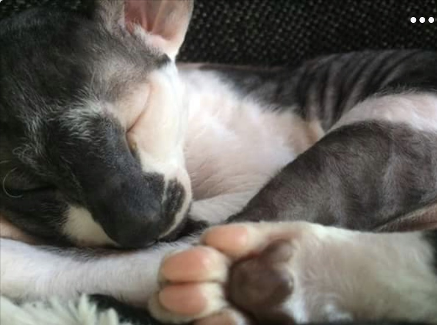
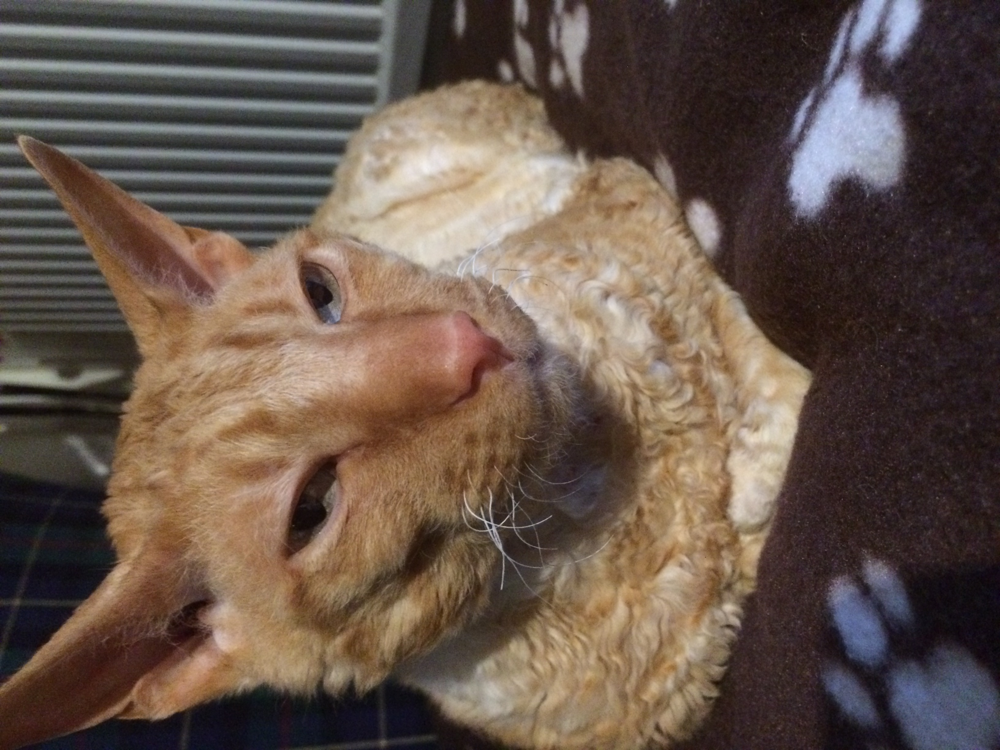
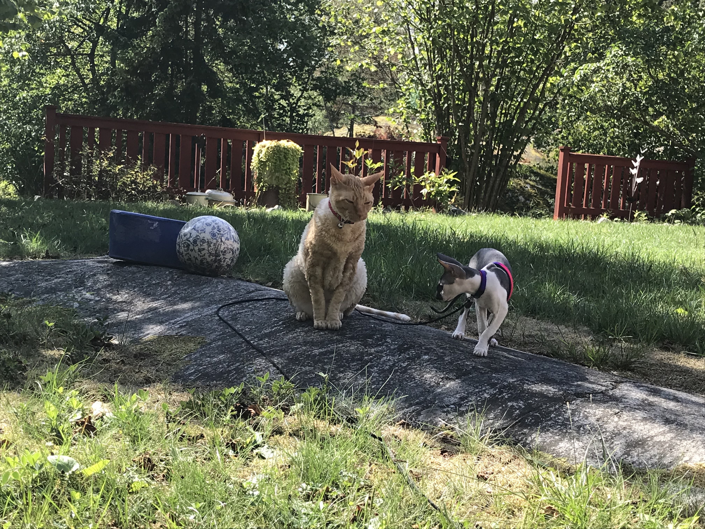
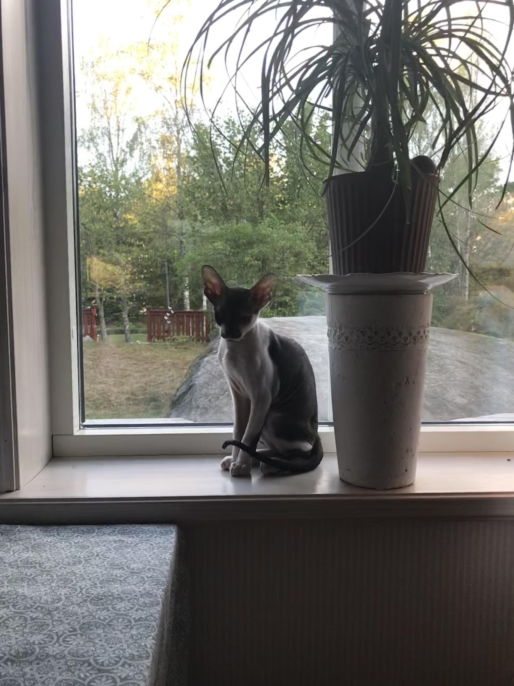
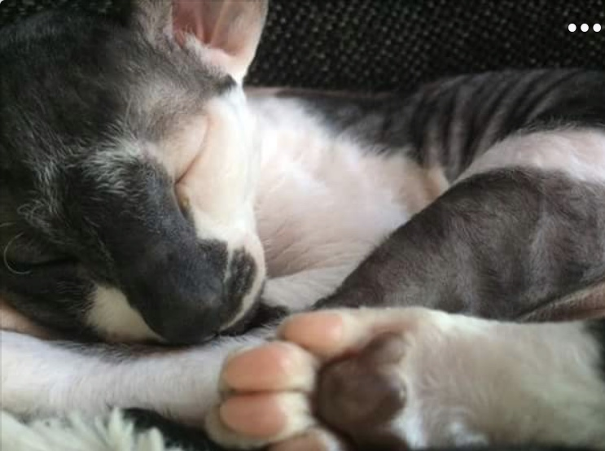
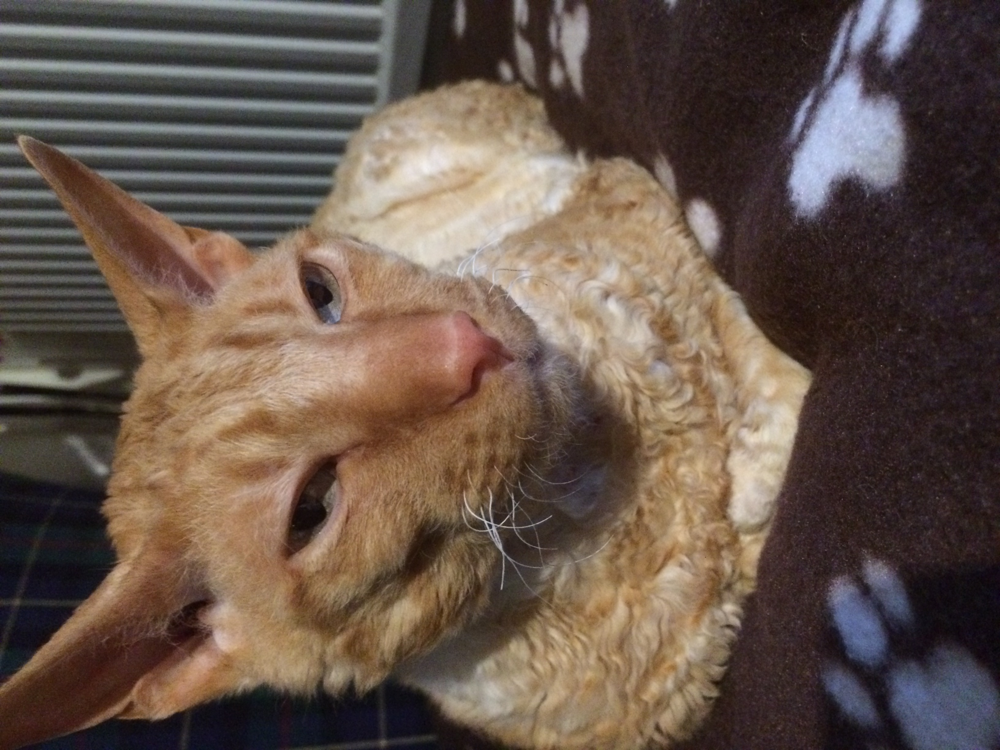
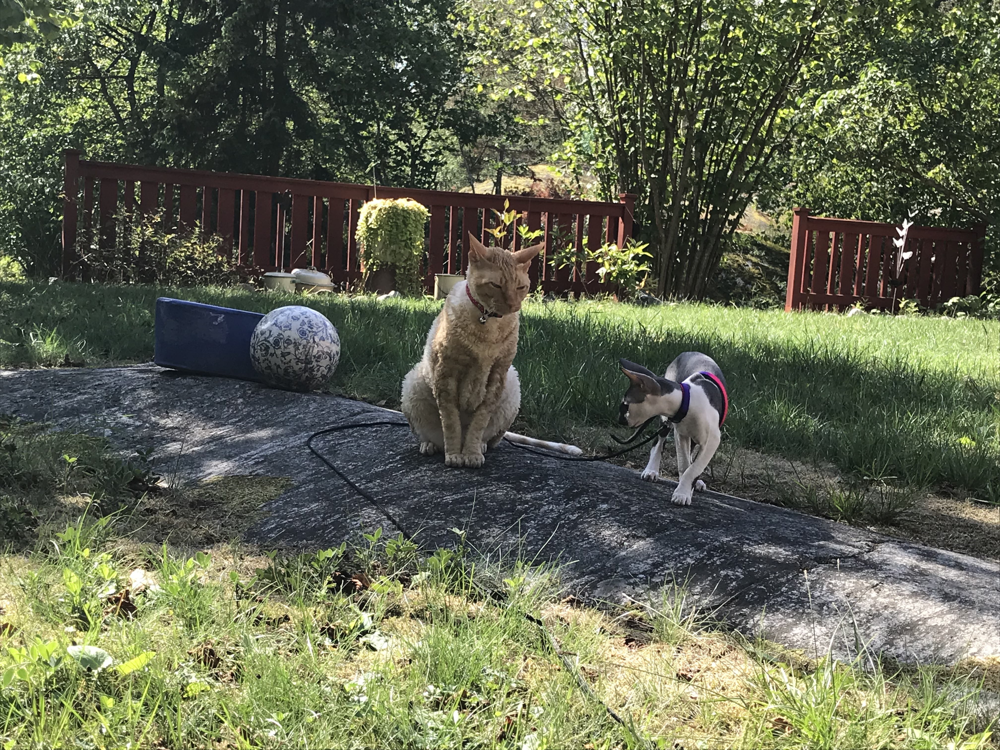
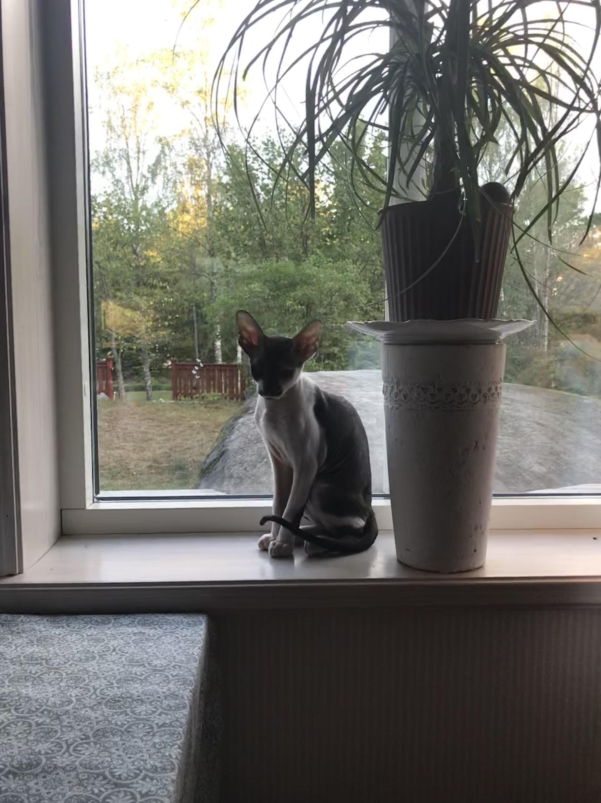

Relationship with Humans
Felis catus has had a very long relationship with humans. Ancient Egyptians may have first domesticated cats
as early as 4,000 years ago. Plentiful rodents probably drew wild felines to human communities. The cats'
skill in killing them may have first earned the affectionate attention of humans. Early Egyptians worshipped
a cat goddess and even mummified their beloved pets for their journey to the next world—accompanied by
mummified mice! Cultures around the world later adopted cats as their own companions. Felis catus has had a
very long relationship with humans. Ancient Egyptians may have first domesticated cats as early as 4,000 years
ago. Plentiful rodents probably drew wild felines to human communities. The cats' skill in killing them may
have first earned the affectionate attention of humans. Early Egyptians worshipped a cat goddess and even
mummified their beloved pets for their journey to the next world—accompanied by mummified mice! Cultures
around the world later adopted cats as their own companions.
Hunting Abilities
Like their wild relatives, domestic cats are natural hunters able to stalk prey and pounce with sharp claws
and teeth. They are particularly effective at night, when their light-reflecting eyes allow them to see better
than much of their prey. Cats also enjoy acute hearing. All cats are nimble and agile, and their long tails aid
their outstanding balance. Like their wild relatives, domestic cats are natural hunters able to stalk prey and
pounce with sharp claws and teeth. They are particularly effective at night, when their light-reflecting eyes
allow them to see better than much of their prey. Cats also enjoy acute hearing. All cats are nimble and agile,
and their long tails aid their outstanding balance.
Communication
Cats communicate by marking trees, fence posts, or furniture with their claws or their waste. These scent posts
are meant to inform others of a cat's home range. House cats employ a vocal repertoire that extends from a purr
to a screech. Cats communicate by marking trees, fence posts, or furniture with their claws or their waste. These
scent posts are meant to inform others of a cat's home range. House cats employ a vocal repertoire that extends
from a purr to a screech. Cats communicate by marking trees, fence posts, or furniture with their claws or their
waste. These scent posts are meant to inform others of a cat's home range. House cats employ a vocal repertoire
that extends from a purr to a screech.
Diet
Domestic cats remain largely carnivorous, and have evolved a simple gut appropriate for raw meat. They also
retain the rough tongue that can help them clean every last morsel from an animal bone (and groom themselves).
Their diets vary with the whims of humans, however, and can be supplemented by the cat's own hunting successes.
Domestic cats remain largely carnivorous, and have evolved a simple gut appropriate for raw meat. They also
retain the rough tongue that can help them clean every last morsel from an animal bone (and groom themselves).
Their diets vary with the whims of humans, however, and can be supplemented by the cat's own hunting successes.
Domestic cats remain largely carnivorous, and have evolved a simple gut appropriate for raw meat. They also
retain the rough tongue that can help them clean every last morsel from an animal bone (and groom themselves).
Their diets vary with the whims of humans, however, and can be supplemented by the cat's own hunting successes.
 






